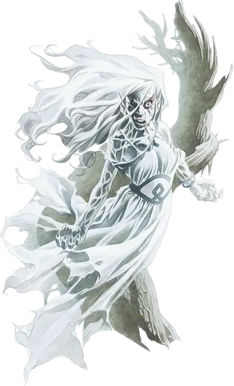

Баньши Глухолесья
Lonelywood Banshee
Средняя Нежить, хаотично-злая

Класс Доспеха 12
Хиты 58 (13к8)
Скорость 0 футов, летая 40 футов (парит)
| мод | спас | ||
|---|---|---|---|
| СИЛ | 1 | −5 | −5 |
| ЛОВ | 14 | +2 | +2 |
| ТЕЛ | 10 | +0 | +0 |
| мод | спас | ||
|---|---|---|---|
| ИНТ | 12 | +1 | +1 |
| МДР | 11 | +0 | +2 |
| ХАР | 17 | +3 | +5 |
Сопротивление урону звук, кислота, огонь, электричество; дробящий, колющий, рубящий от немагических атак
Иммунитет к урону некротическая энергия, холод, яд
Иммунитет к состояниям сбивание с ног, паралич, очарование, отравление, опутанность, окаменение, истощение, испуг, захват
Чувства тёмное зрение 60 футов, пассивное Восприятие 10
Языки Общий, Эльфийский
Опасность 4 (1100 опыта)
Бонус мастерства +2
Особенности
Обнаружение жизни. Баньши магически чувствует присутствие существ на расстоянии 5 миль, не являющихся ни нежитью, ни конструктами. Она знает общее направление, но не точное местоположение.
Бестелесное перемещение. Баньши может перемещаться сквозь других существ и предметы, как если бы они были труднопроходимой местностью. Она получает урон силовым полем 5 (1к10), если оканчивает ход внутри предмета.
Природа нежити. Баньши не нуждается в воздухе, еде, питье и сне.
Действия
Призрачный лук. Дальнобойная атака заклинанием: +4 к попаданию, дистанция 150/600 футов, одна цель. Попадание: 12 (3к6 + 2) урона некротической энергией.
Ужасный облик. Все существа, находящиеся в пределах 60 футов от баньши, не являющиеся нежитью и видящие её, должны преуспеть в спасброске Мудрости Сл 13, иначе они становятся испуганными на 1 минуту. Испуганная цель может повторять этот спасбросок в конце каждого своего хода, с помехой, если баньши находится в пределах её линии обзора, оканчивая эффект на себе при успехе. Если цель успешно совершила спасбросок или действие эффекта закончилось, она получает иммунитет к Ужасному облику этой баньши на следующие 24 часа.
Вопль (1/день). Если баньши не находится на солнечном свете, она может издать скорбный вопль. Этот вопль не оказывает эффект на конструктов и нежить. Все другие существа в пределах 30 футов от нее, услышавшие вопль, должны совершить спасбросок Телосложения Сл 13. При провале хиты существа снижаются до 0. При успехе существо получает 10 (3к6) урона психической энергией.
Описание
Эта баньши - призрачные останки эльфийской воительницы, которая была проклята за тщеславный, злой поступок.
Она владеет спектральным длинным луком стреляющим иллюзорными стрелами. По лесу бродит только одна баньши. Если она будет уничтожена, то через 24 часа формируется вновь в случайным образом выбранным месте леса, проклятая на вечное изгнание.